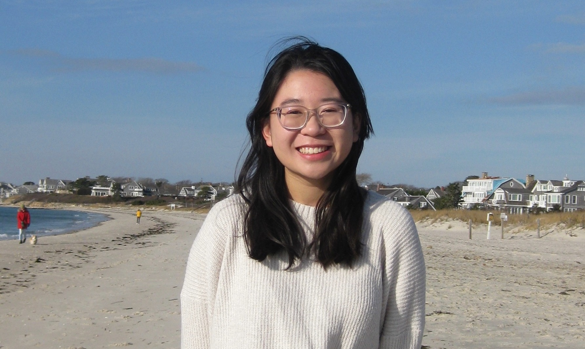

𓆝 𓆟 𓆞
About Me
I'm interested in computer science & biology, with a passion for leveraging computational tools to tackle biological challenges. This summer, I'll be interning at Eli Lilly and last summer I conducted research at Novartis in the Oncology Data Science Department.
Outside of classes, I plan the logistics of HackMIT, dance on the MIT ballroom dance team, and plan a summer STEM program with dynaMIT.


education
Massachusetts Institute of Technology
2023 – 2027
B.S. Computer Science & Molecular Biology · Cambridge, MA
Relevant coursework
Biostatistics, Modern Computational Biology, Machine Learning in Molecular and Cellular Biology, Cell Biology, Algorithms, Probability & Statistics, Linear Algebra
research & work
Undergraduate Researcher · Hacohen Lab Sept 2025 – present
- Analyze single-cell RNA-seq data from cutaneous and mucosal melanoma to identify cellular and molecular mechanisms underlying differential immunotherapy responses.
- Identify immune and tumor-intrinsic genes and pathways that suppress anti-tumor immunity by integrating transcriptomic profiles.
Data Science Intern · Novartis May – Aug 2025
- Developed a machine learning model in Python and R to predict tumorigenesis of human cancer cell lines in mice models.
- Integrated differential gene expression analysis and gene set enrichment analysis to inform predictive features.
- Applied gene signature scores to single-cell RNA-seq data from human breast cancer tumors to identify malignant subpopulations with high engraftment potential.
Undergraduate Researcher · Calo Lab, MIT Biology Jan – June 2025
- Analyze nanopore sequencing data to resolve tRNA splicing patterns and detect RNA modifications, with a focus on developing computational methods for accurate tRNA profiling.
Undergraduate Researcher · Hansen Lab, MIT Bioengineering Jan 2024 – Jan 2025
- Characterized and validated bidirectional promoters as a novel tool for gene co-regulation.
Young Scholar · Amini Lab, Northeastern University Jun – Aug 2022
- Published research on mechanical properties of the porcine tricuspid valve through dissections, biaxial mechanical testing, and MATLAB analysis.
- Collaborated with Northeastern professors and mentors; gained hands-on lab experience.
leadership
Logistics Coordinator · HackMIT Feb 2024 – present
- Coordinate the application process, check-in procedure, and Hackweek events for HackMIT, a 1,000+ student hackathon held each fall.
Board Member · dynaMIT Oct 2023 – present
- Help plan and execute a free STEM outreach program for underrepresented middle schoolers, impacting 80 participants annually.
- Design curriculum (Origami, Graph Theory, Knot Theory), secure funding, and coordinate logistics with a cross-functional team.
Education Assistant · MIT Museum Oct 2023 – Mar 2025
- Facilitated the Maker Hub and Learning Lab to engage visitors with hands-on STEM topics.
- Collaborated with 15 high school students in Greater Boston to design outreach events and connect them to MIT professionals and current research breakthroughs.
awards
1st
Innovation in Research – Data Science, Novartis Summer of Science 2025
2nd
Scientific Content & Merit, Novartis Summer of Science 2025
3rd
Poster Display & Presentation, Novartis Summer of Science 2025
1st
Momentum Design Competition, sponsored by Blue Origin 2024
top
Top Beginner Hack, HackMIT 2023